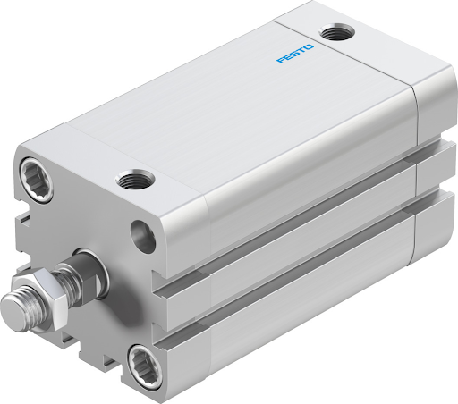
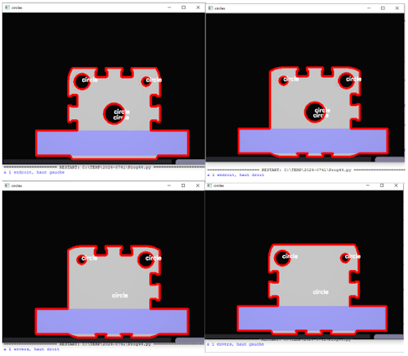

Design of a dismantling line for a hydraulic actuator (70 hrs)
Sept 2024–Jan 2025 · Under the supervision of Prof. A. Olabi and R. Bearee (LISPEN)
Robot factory development project: starting from a video of an operator disassembling an actuator, my team and I had to design, with the RoboDK software and its robot library, an automated solution respecting the technical specifications of the factory.

My part of the study was the detection: I compared various detection devices to find the best way to detect the position of the part when it arrives at the station. I also coded the process to follow according to this position information.

Moreover, to reduce the process time, we reduced the number of times the robot gripper has to open, thanks to specific 3D printed fixtures in which the part can be pushed to push out the piston. We also designed another 3D printed bracket to locate the part exactly, reducing the accumulation of the position errors of our two robots.

This project was almost entirely developed on computer, but we still ran some tests in real conditions to validate the various tool grips and, at the same time, to deal with the major issues that could not be solved in RoboDK.